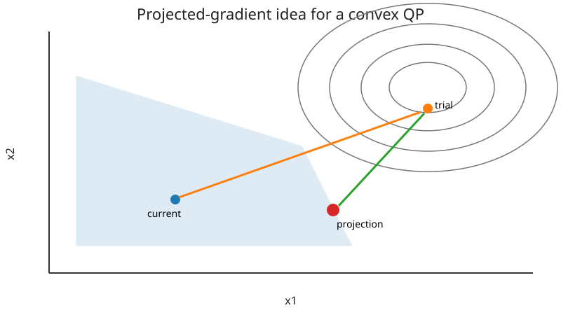

Quadratic Programming
A quadratic program (QP) has a quadratic objective and linear constraints:
$$ \min_x \frac12x^\top Qx + c^\top x $$
subject to
$$ A_{\text{ub}}x\le b_{\text{ub}}, \qquad A_{\text{eq}}x = b_{\text{eq}}. $$
When
$$ Q\succeq0, $$
the problem is convex.
Unconstrained solution
If $Q$ is positive definite and there are no constraints, stationarity gives
$$ Qx^* + c = 0, $$
so
$$ Qx^* = -c. $$
Again, solve this system directly rather than forming $Q^{-1}$.
Projected gradient idea
For a convex feasible set $C$, projected gradient descent uses
$$ y_k = x_k - \alpha\nabla f(x_k), $$
then
$$ x_{k+1} = \Pi_C(y_k), $$
where $\Pi_C$ denotes Euclidean projection.

The repository implementation uses this idea in a simplified form: it takes a gradient step and then projects onto the feasible polyhedron with Dykstra's algorithm, which cycles through the individual half-spaces and the affine equality set and carries correction terms between sweeps.
Step size for a quadratic
For
$$ f(x) = \frac12x^\top Qx + c^\top x, $$
the gradient is
$$ \nabla f(x) = Qx + c. $$
If $Q\succeq0$, the largest eigenvalue $\lambda_{\max}(Q)=\|Q\|_2$ is a Lipschitz constant $L$ for the gradient. The fixed step used by the repository is therefore
$$ \alpha = \frac{1}{L} = \frac{1}{\|Q\|_2}. $$
If $Q$ is numerically zero the problem is a linear program: the gradient is constant, there is no curvature from which to derive a step, and the routine raises an error instead of guessing a step. Use a linear programming solver in that case.
What projection must compute
Euclidean projection onto a nonempty closed convex set solves
$$ \Pi_C(y)=\underset{z\in C}{\operatorname{arg\,min}}\ \tfrac12\|z-y\|_2^2. $$
For a half-space $a^\top z\leq b$ with $a\ne0$,
$$ \Pi(y)=y-\frac{\max(a^\top y-b,0)}{\|a\|_2^2}a. $$
For full-row-rank equalities $Az=b$, it is $y-A^\top(AA^\top)^{-1}(Ay-b)$, evaluated through a linear solve. A single pass through several such sets can violate a set visited earlier. Dykstra's algorithm stores a correction for each set: add the stored correction before projecting, then replace it by the difference between that corrected input and its projection. Repeated sweeps converge to the projection onto the intersection under the standard nonempty closed convex assumptions.
The projected-gradient stopping quantity is
$$ G_\alpha(x)=\frac{x-\Pi_C(x-\alpha\nabla f(x))}{\alpha}. $$
For a feasible $x$ and convex differentiable $f$, $G_\alpha(x)=0$ is equivalent to the first-order constrained optimality condition. The ordinary gradient need not vanish. For example, minimizing $x^2/2$ over $x\geq1$ gives $x^*=1$: its gradient is $1$, while projection sends the trial point $0$ back to $1$ and the gradient mapping is zero.
Positive semidefiniteness alone does not ensure a finite optimum. The unconstrained problem with $Q=\operatorname{diag}(1,0)$ and $c=(0,-1)^\top$ is convex but unbounded below in its second coordinate. Feasibility and attainment remain separate requirements.
Why the projected step can decrease the objective
Let the current point $x$ be feasible, put $z=\Pi_C(x-\alpha g)$, and write $d=z-x$. The projection's first-order condition, tested against the feasible point $x$, gives $g^\top d\leq-\|d\|_2^2/\alpha$. Combining this with the $L$-smooth upper bound yields
$$ f(z)\leq f(x)-\left(\frac1\alpha-\frac L2\right)\|d\|_2^2. $$
Thus an exact projected step decreases a nonstationary objective for $0<\alpha<2/L$. The common choice $\alpha=1/L$ leaves a convenient margin. This argument explains why the projection must be the nearest feasible point, rather than an arbitrary feasible repair, and why an inaccurate inner projection can affect the outer convergence. It does not require the ordinary gradient to vanish at a boundary solution.
KKT system for equality-constrained QP
For
$$ Ax = b, $$
the optimality equations are
$$ Qx + c + A^\top\nu = 0, $$
$$ Ax = b. $$
Together they form
$$ \begin{bmatrix} Q&A^\top\\ A&0 \end{bmatrix} \begin{bmatrix} x\\ \nu \end{bmatrix} = \begin{bmatrix} -c\\ b \end{bmatrix}. $$
This linear-algebra viewpoint is central to active-set and interior-point methods.
Numerical caveats
A single cyclic projection sweep need not even leave a feasible point. Repeated uncorrected projections can reach a feasible point that is not the nearest one, which changes the projected-gradient algorithm. Dykstra's correction terms recover the true projection in the limit; a finite inner solve must monitor feasibility and projection accuracy. Convergence can be slow when constraint sets meet at unfavorable angles, so large or difficult QPs often benefit from a dedicated solver. The equality KKT system is nonsingular, for example, when $A$ has full row rank and $Q$ is positive definite on $\ker A$; full positive definiteness of $Q$ is sufficient but stronger than necessary.